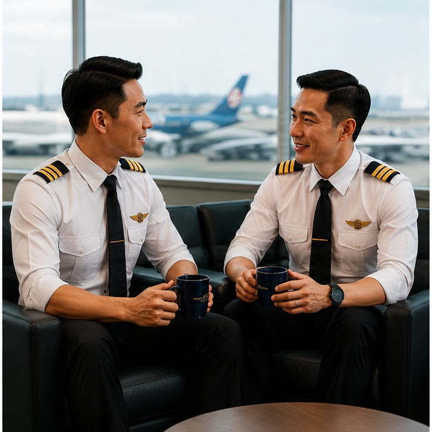

Confidential
Your privacy matters. What you share is treated with respect and care.
PEERS HELPING PEERS
Sometimes, having someone to talk to can make things feel a little lighter.
We're colleagues too. We understand that work, life and everything in between can sometimes feel like a lot.
No pressure. No judgement. Just a conversation.

Your privacy matters. What you share is treated with respect and care.

A conversation with a colleague who understands the environment you work in.
Here to listen without judgement and support you through whatever may be going on.
ABOUT US
MAPS is a peer support programme where crew members can talk with a trained colleague about mental wellbeing, work pressures or things happening in life — in a confidential setting.
The Peers are trained fellow line pilots (non-management) who are able to better understand fellow colleagues. MAPS strives to promote a confidential, non-judgemental and non-stigmatised environment.
HOW WE CAN HELP
There doesn't have to be a crisis. You can reach out whenever something is weighing on you.
A difficult flight, pressure at work, conflict, changes or something that has been sitting on your mind.
Sometimes things simply start to feel like too much. You don't have to work through everything alone.
Life outside work affects us too. Sometimes having someone listen can help you find your next step.
YOUR PEERS
You may already know some of us from the line. We're simply colleagues who are here when you need someone to talk to.


ADDITIONAL SUPPORT
MAPS is one form of support. Professional support is also available.
If you would prefer to speak with a doctor or medical professional, you may reach out through the appropriate medical support channel.
Naluri offers professional wellbeing support for those who may prefer to speak with someone outside MAPS.
WHEN YOU'RE READY
Nothing complicated. It starts with a conversation.
Send MAPS an email whenever you feel ready.
One of our trained peers will get in touch.
A confidential and non-judgemental space to talk about whatever is on your mind.
GET IN TOUCH
Reaching out can sometimes be the hardest part. When you're ready, send us an email and one of our peers will get in touch with you.
Talk to a Peer ♡MAPS is a peer support service and is not an emergency service. If you need immediate assistance, please contact medical personnel or the appropriate emergency service.